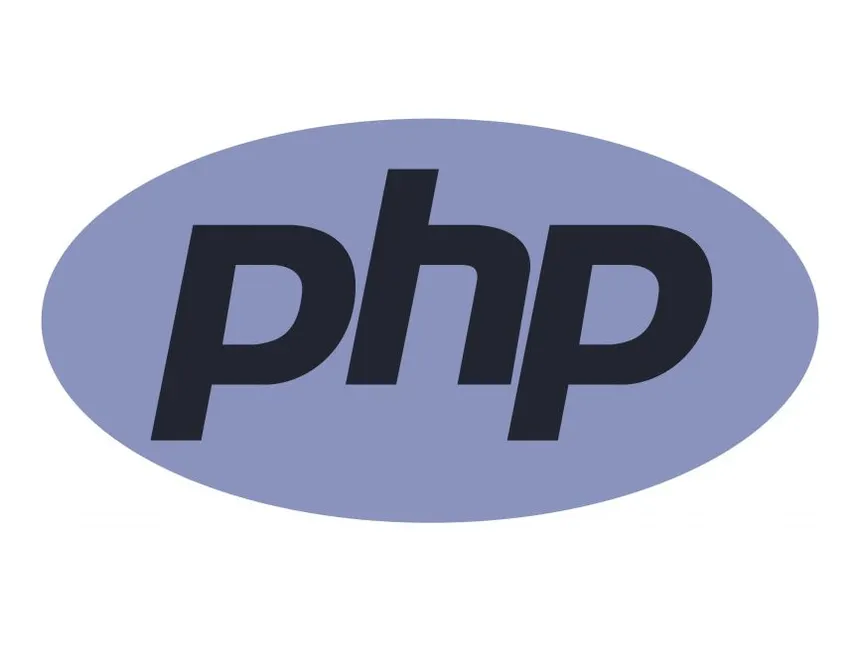

REVERSE SHELL
[LISTENER ACTIVE: PORT 4444]
Le script PHP malveillant a été exécuté. Votre écouteur Netcat reçoit la connexion : Connection received on 192.168.1.105.
Vous disposez d'un shell interactif sous l'utilisateur www-data. Il est temps de passer à l'escalade de privilèges.